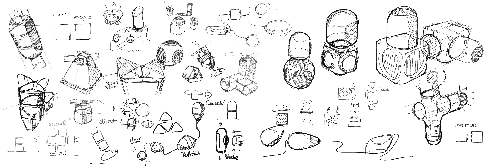
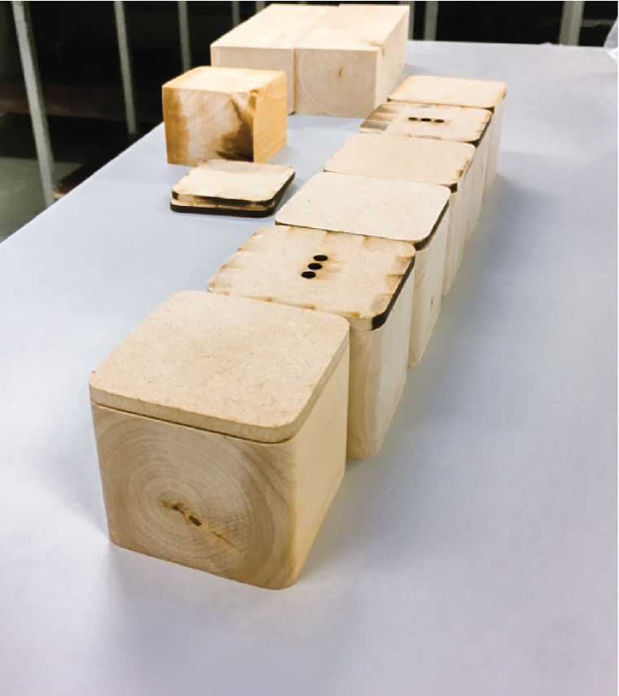
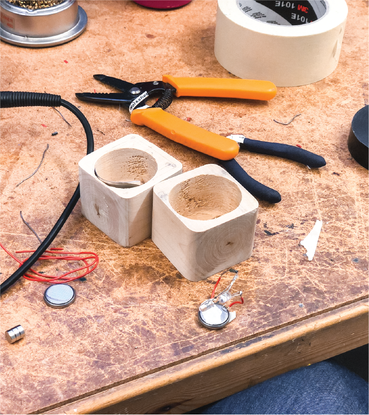
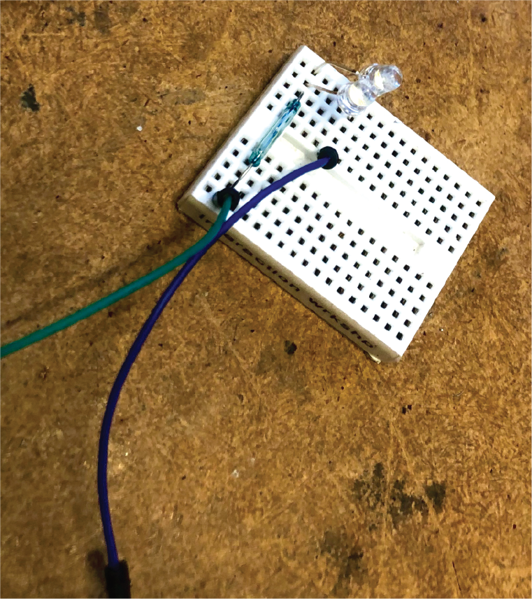
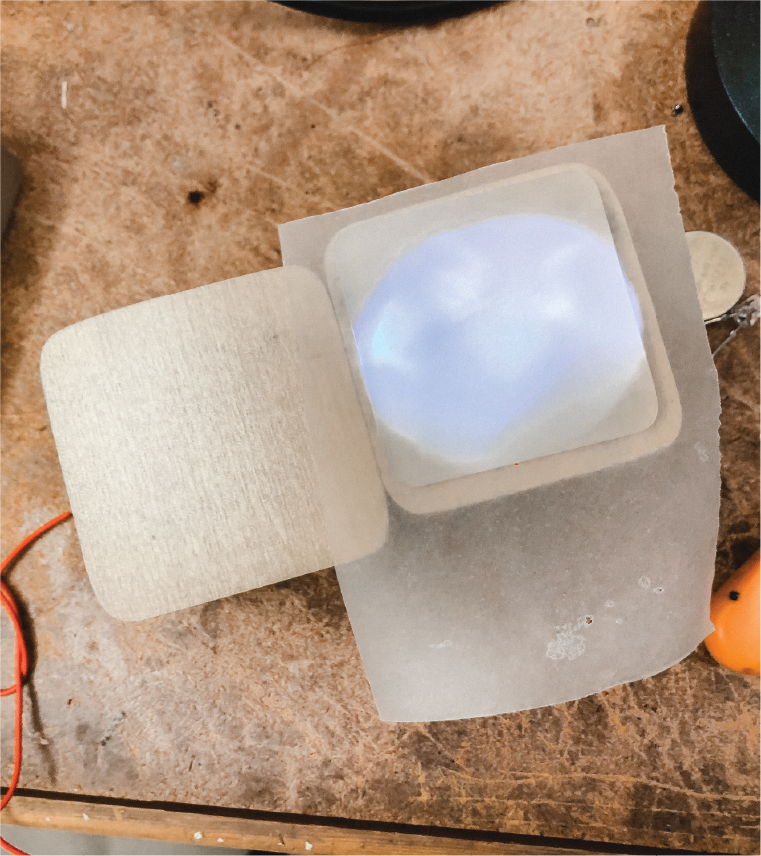
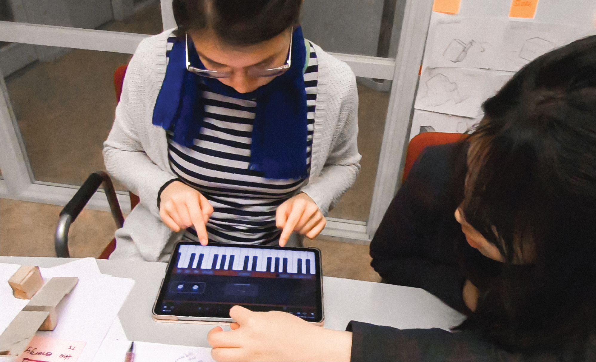
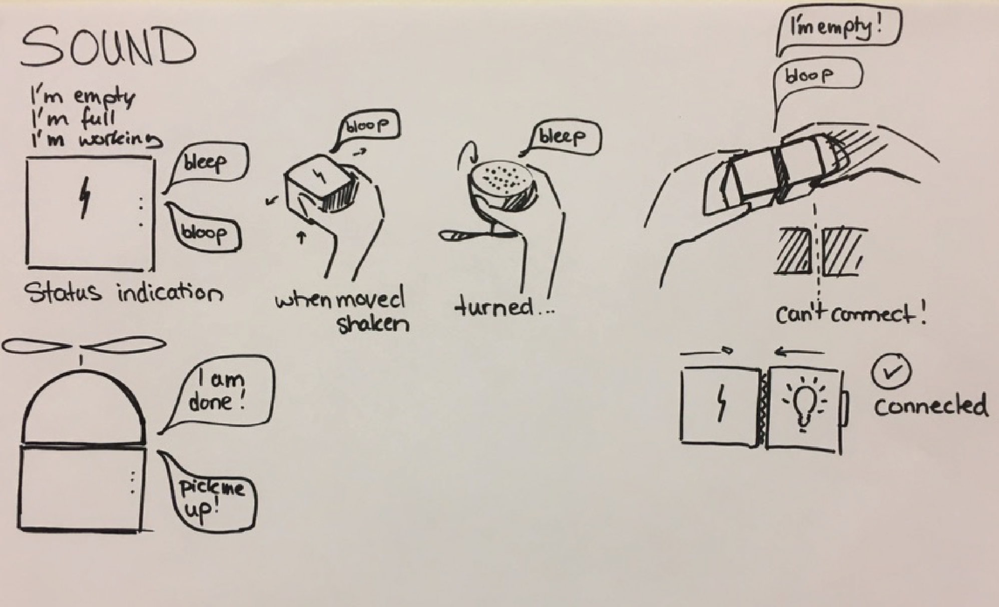
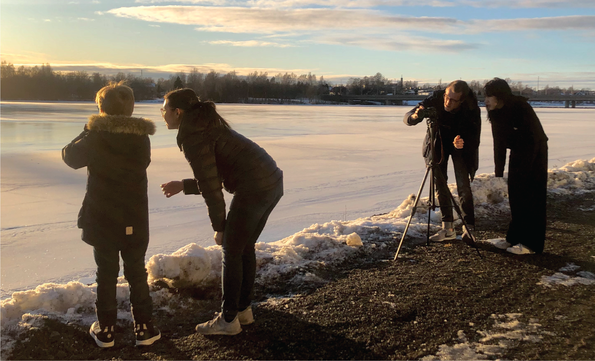
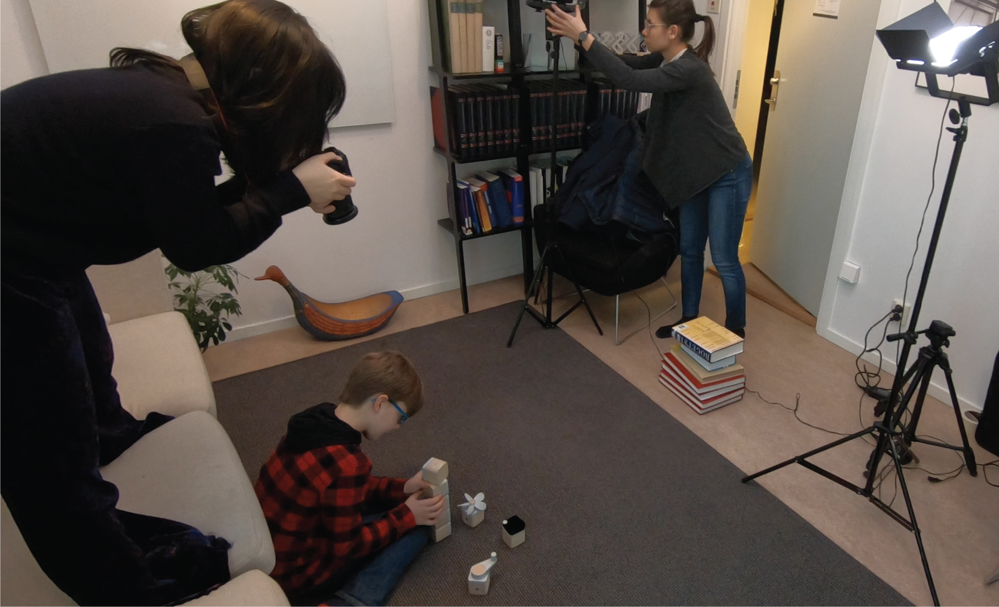
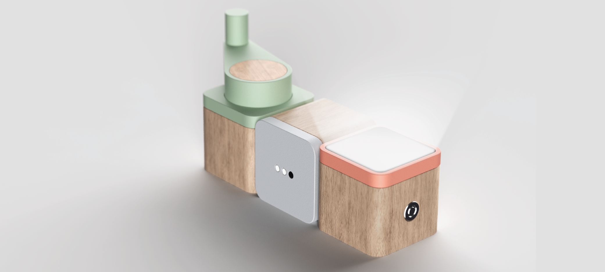

So Heum Hwang
about
playground
works
Joul, make keep play
Joul is a set of toy blocks to explore sustainability, especially energy cycle through play. Children can generate different types of energy such as wind or motion energy through physical interaction and connect them with battery blocks and output blocks with sound interaction.
TEAM
Anna Hing, Fabien Böttcher and me
MY ROLE
User Research, Interaction prototyping, Sound design, UI design, Filmmaking, Motion design, Storytelling
TOOLS
After Effects, Figma, Illustrator, Electronics


Final Video
Design Process: Discover
Our project started with the the broad topic of teaching kids about sustainability. We interviewed 2 parents who each had 19 year old child and 5 year old child. We could notice how younger parents are addressing more of a need to teach sustainability to their children, but were having a hard time explaining abstract concepts in their level. The increasing needs in teaching sustainability was not primarily about conveying micro-level habits like recycling or saving power. Parents had to give their children a bigger picture of the cycle and about how our planet's resources work.

Importance of Sustainability
“I haven't spare time to teach my children about sustainability in particular, rather I thought it was common sense.”
_father of 19 year old daughter

Abstract Concepts
“Talking about abstract concepts with my son is hard, because I don't know on which level to explain them.”
_mother of 5 year old son
We saw how different children workshops are done in Bildmuseet. There were workshops that dealt with questions like “What would you change if you can change something in the world?” and the children had to craft their solutions. Results varied from making robots that would clean the house to self-sorting trash cans. Workshops were throwing open-ended questions to children so that they can have an opportunity to think and explore by themselves, instead of having top-down questions that have a yes and no answer.


Design Process: Define
Sustainability should not be something that is taught from a top-down approach, but a concept that children can learn by themselves through creative freedom and exploration. After this exploration process, our solution should act as a conversation starter for parents that they can naturally use to explain important concepts through play.


Design Process: Develop
Early on in the process, rudimentary foam mockups and magnets helped to visualize the different types of modules and to test different interactions. With a sound sketch video, differernt sound effects were tested out to evaluate whether it was appropriate for each interaction.
In order to give most freedom for children, we went through different stages of sketching to explore form. As a result, we decided on a rectangular geometric form that allows children to further build on their creativity through a basic form.





We were able to create the interaction of turning the LED light on with a battery block through reed switches. LED lights and an intransparent paper was used to light up Joul blocks.



Sound was used as an interaction factor to make the process more playful and comprehensible. Specially designed sounds help children to link different sounds to energy sources and assist them in making the energy cycle tangible. The sound analogy is inspired from the wood material of Joule, generating playful and wooden sounds like a marimba when different blocks connect.






Design Process: Deliver
Interactive
Different sounds that gives feedback for different types of action
Tangible
Creative freedom achieved through combining tnagible blocks
Educational
General understanding about sustainability and how energy cycle works



Key Features
Charge Energy
Different types of energy such as kinetic, solar or wind energy are represented in each generation block and this process is done through children’s physical motion.
Store Charged Energy
Charged energy is stored in battery blocks and the three little lights on them can help the kid to visually quantify their charging status.
Use Energy for Output
Battery blocks that contain this charged energy can be connected to output blocks to create different feedback such as light, sound or vibration.
This whole process is assisted with a mobile interface. The interface indicates the status of charged energy in joules simultaneously as the generation blocks are charged. It also visually makes an analogy of what other activities you can do with the amount of energy charged. This enables children to understand how much they charged is equivalent in lightening up a lamp, or using a smartphone.